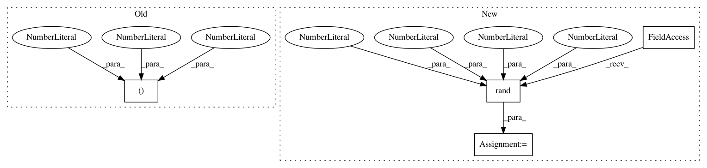

736ba6c6873290fdae110395040f76ba7ab0ff19,tests/test_net_transformer.py,,test_net_transformer,#,3
Before Change
def test_net_transformer():
model_a = Sequential()
model_a.add(Conv2D(32, (3, 3), activation="relu", input_shape=(28, 28, 1)))
model_a.add(Conv2D(32, (3, 3), activation="relu"))
model_a.add(MaxPooling2D(pool_size=(2, 2)))
model_a.add(Dropout(0.25))
After Change
model.compile(loss=categorical_crossentropy,
optimizer=Adadelta(),
metrics=["accuracy"])
random_input = np.random.rand(1,28,28,1)//one picture, 28,28, 1 chanel
output1 = model.predict_on_batch(random_input)
//print(model.summary())
models = net_transfromer(model)
//print(models[5].summary())
for new_model in models:
In pattern: SUPERPATTERN
Frequency: 4
Non-data size: 4
Instances
Project Name: jhfjhfj1/autokeras
Commit Name: 736ba6c6873290fdae110395040f76ba7ab0ff19
Time: 2017-12-17
Author: wangtaoo665@gmail.com
File Name: tests/test_net_transformer.py
Class Name:
Method Name: test_net_transformer
Project Name: bethgelab/foolbox
Commit Name: d3de8823586d559a77d6bb50c92eaf9428a203c6
Time: 2018-10-04
Author: git@jonasrauber.de
File Name: foolbox/tests/test_models_tensorflow.py
Class Name:
Method Name: test_tf_keras_constructor
Project Name: IBM/adversarial-robustness-toolbox
Commit Name: c95d470a391216cfe96e717840b2cef8d053f7b1
Time: 2019-01-10
Author: Maria-Irina.Nicolae@ibm.com
File Name: art/defences/variance_minimization_unittest.py
Class Name: TestTotalVarMin
Method Name: test_one_channel